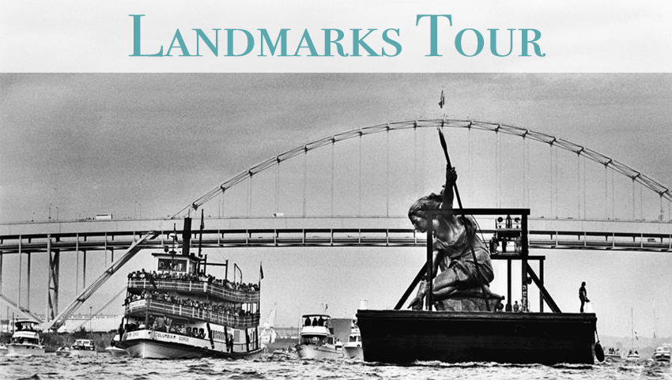

Landmarks Tour
This tour will help you cement your Portland knowledge and cover all of Portland's famous landmarks and must see spots. We use a spacious shuttle bus to travel around Portland's quadrants and famous bridges. When you finish the tour, you can tell everyone that you've seen it all in Portland.
What's Included?
- Complimentary tour booklet with photos and brief descriptions of the locations we visit
- Complimentary local snacks
Duration: 4 hours
Transportation: Walking/Driving
Food: Included
Price: $110
"We were only in town for a day and decided to make the most of it with a tour. We covered almost the entire city. I couldn't have done that alone and our tour guide was so fun!" – Beatrix